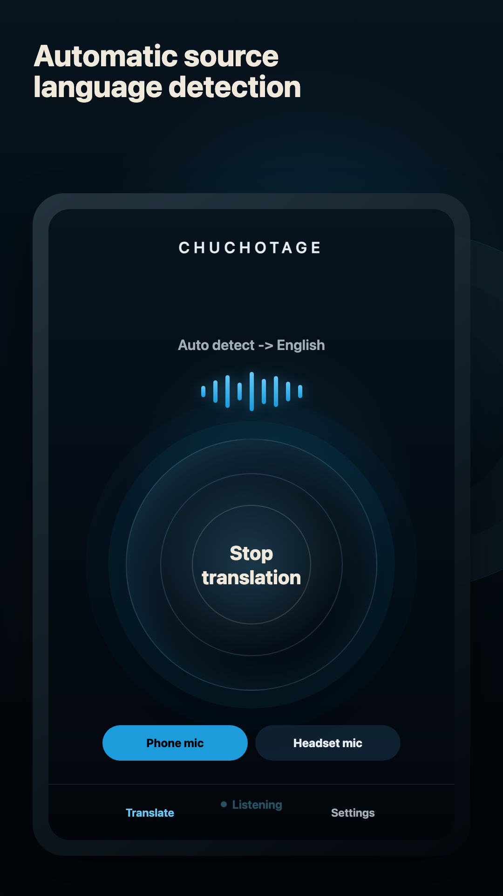
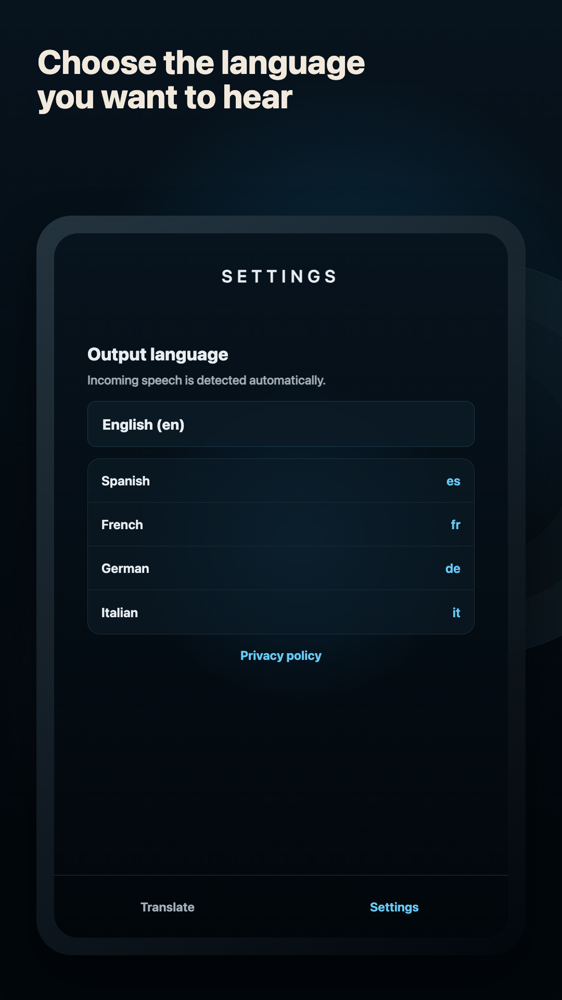
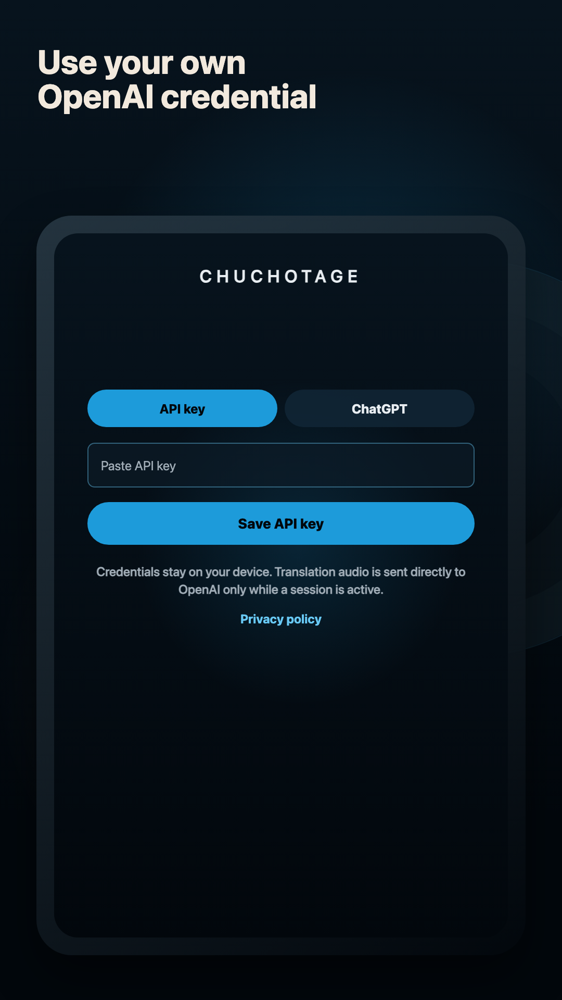

Translate meeting audio live
Follow the meeting audio, not the transcript pile.
Chuchotage is for listening to live speech and app audio where the platform allows capture, then hearing the translation privately.
Use caseA Zoom call, webinar, training video, or hybrid meeting where you need to follow the language in real time.
Best fit todayMac playback audio where macOS allows it, microphone listening on iPhone and iPad, Android where playback capture is allowed, and Windows paths with release limits.
Not a botNo meeting calendar, no recording archive, no meeting assistant dashboard, and no saved transcript history.
What it does
What it does
For meetings in the room, Chuchotage can listen through the microphone and play translated speech back to you.
For meeting audio playing on a device, support depends on the operating system: Mac playback capture, Android Device audio for eligible apps, or the Windows companion's playback-capture path.
Screenshots
Current app screens, not mockups.
The app surface stays small on purpose: one live control, source-language detection, and the output language you want to hear.



Platforms
Supported platforms today.
Mac meetings
Designed for Mac playback audio on macOS 14.2+ with the required system-audio permission. Use headphones to avoid feedback.
iPhone and iPad
Public App Store app. Current iOS/iPadOS behavior is microphone-first; same-device Zoom or app-audio capture is planned separately, not shipped.
Android meetings
Device audio is implemented for Android 10+ where the source app permits playback capture, and the Android app is public on Google Play.
Windows meetings
The companion captures selected Windows playback audio for webinars, browsers, and meeting apps. Public Windows download is not posted yet.
Audio sources
Headphones, mics, and app audio.
Room audio
Use the phone mic, headset mic, or computer microphone when the meeting sound is physically audible nearby.
Zoom and browser audio
Use Mac playback capture, Android Device audio when Android exposes that app, or Windows playback capture in the companion.
Headphones
Strongly recommended. They keep translated audio private and reduce the chance that translated speech feeds back into the source capture.
Original audio
Desktop routes should keep source capture and translated playback separated when possible. Windows single-headset capture has OS-version constraints.
Limits
What does not work yet.
No meeting bot, meeting invite, cloud recording, or transcript archive.
iPhone and iPad do not currently translate same-device Zoom audio.
Android only captures app audio that Android and the source app allow.
A public Windows download is not posted yet.
Privacy shape
Personal translation without an ad or analytics layer.
No ads and no analytics SDKs in the app.
Credentials and app preferences are stored on the device using the platform secure-storage path.
During normal API-key or ChatGPT use, selected audio and translation settings are sent from the app to OpenAI while translation is active.
Chuchotage does not run a hosted audio relay and does not keep transcript history.
Related pages
Pick the route that matches what you need to translate.
Download